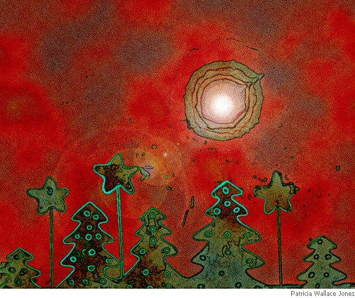

Guy Kettelhack
While the Globe is Warming
You stop to say what you can.
Though you sometimes feel
half like a man — one-quarter a sieve —
and the rest a conglomerate
mix of whatever takes in or can give
the proportionate fix of perspective
that tells you what ought to erect
and what ought to stay down —
and otherwise helps to direct you —
remember the streets in your town —
and enough of your lusts and your loves
to keep poking around for relief.
This thing you call consciousness?
Prey to a merciless thief: or maybe your
mind is the varmint and everything
else is the innocent victim: poor
you or poor them — whoever’s at fault
is condemned: but so is the rest
of who isn’t. (Oh, savior be gone — or
be risen!) But everything’s fine
nonetheless. You manage to sleep
and get up and get dressed. You
shop and you pray and you plan.
You stop to say what you can.
Sewing Lesson
Fabric may turn out to know
more of what it means to sew
than the importunately jabbing
needle: consciousness is
greedy: it will wheedle itself
into thread — embed, conniving,
softly striving into cloth, diving
into yards and bolts of feeling,
stealing, hoarding: then, though
only when a necessary disbelief
suspends, will bloom, revealing
some dimension you had not
known it was secretly concealing:
everything — the room, the air,
the clothes you wear — reports
awareness: fright, despair,
delight, repentance spent,
new sentience lent — conduces
to surreal suffusing light —
requites: meticulously glows.
More knows than we suppose.
Guy Kettelhack’s poems have appeared in over twenty-five online and print journals and he has authored, co-authored or contributed to over 30 nonfiction books. He lives in New York City.
|